청소년상담사-3급(1교시)(구) (2015-03-28 기출문제)
1과목: 발달심리
1. 3세 아동들을 표집하여 이 아동들을 6세, 9세, 12세에 반복 측정함으로써 각 연령단계에서 인지능력의 변화를 살펴보는 연구 설계는?
- 종단적 설계
- 시간-지연 설계
- 계열적 설계
- 비교연구 설계
- 횡단적 설계
(정답률: 78%)

2. 유아기 신체발달의 특징에 관한 설명으로 옳지 않은 것은?
- 두미 방향, 중심에서 말단 방향으로 이루어진다.
- 영아기만큼 빠른 속도는 아니지만 신장과 체중이 점진적으로 증가한다.
- 성장함에 따라 활동량과 활동반경이 확대된다.
- 뇌와 머리는 신체의 다른 부분보다 느리게 성장한다.
- 신체성장과 발달에는 개인차와 문화적 차이가 있다.
(정답률: 88%)
3. 정신장애진단통계편람(DSM-5)에서 품행장애의 진단기준에 해당되지 않는 것은?
- 타인에 대한 공격성
- 언어 폭력
- 기물 파괴
- 사기나 절도
- 심각한 규칙위반
(정답률: 68%)
4. 태내발달에 관한 설명으로 옳지 않은 것은?
- 배아기는 주요 신체기관과 신경계가 형성되는 시기이다.
- 배아기는 기형발생물질에 민감하게 영향을 받는 시기이다.
- 태아기는 신체기관의 분화가 일어나는 시기이다.
- 태아기는 배아기보다 중추신경계가 더 빠르게 발달하는 시기이다.
- 태아기는 모든 기관 체계가 정교해지는 시기이다.
(정답률: 57%)
5. 염색체 이상으로 인한 증후군이 아닌 것은?
- 터너 증후군(Turner's syndrome)
- 다운 증후군(Down's syndrome)
- 영아돌연사 증후군(sudden infant death syndrome)
- 수퍼남성 증후군(supermale syndrome)
- 클라인펠터 증후군(Klinefelter's syndrome)
(정답률: 81%)
6. 유아기 대근육 운동기능의 발달이 연령대별로 바르게 연결된 것을 모두 고른 것은?
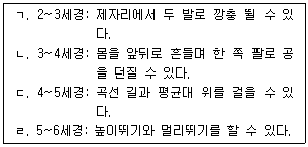
- ㄱ, ㄴ
- ㄴ, ㄷ
- ㄷ, ㄹ
- ㄱ, ㄴ, ㄹ
- ㄱ, ㄴ, ㄷ, ㄹ
(정답률: 64%)
7. 다음의 진단적 특징을 보이는 정신장애는?
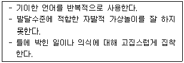
- 주의력결핍 과잉행동장애
- 분리불안장애
- 지적장애
- 강박장애
- 자폐장애
(정답률: 64%)
8. 학습장애에 관한 설명으로 옳은 것을 모두 고른 것은?
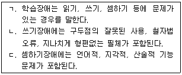
- ㄱ
- ㄷ
- ㄱ, ㄴ
- ㄴ, ㄷ
- ㄱ, ㄴ, ㄷ
(정답률: 45%)
9. 놀이에 관한 파튼(M. Parten)의 이론에서 다음에 해당하는 놀이 유형은?
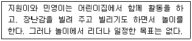
- 연합 놀이
- 비몰입 놀이
- 평행 놀이
- 방관자 놀이
- 협동 놀이
(정답률: 60%)
10. 다음을 설명하는 현상은?
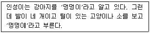
- 신속표상대응
- 어휘대조
- 과잉확대
- 과잉축소
- 상호배타성
(정답률: 76%)
11. 마샤(J. Marcia)가 자아정체감 수준을 네 가지 지위로 구분하는데 적용한 두 가지 기준(차원)은?
- 유실(foreclosure), 유예(moratorium)
- 유실(foreclosure), 관여(commitment)
- 위기(crisis), 혼미(diffusion)
- 위기(crisis), 관여(commitment)
- 혼미(diffusion), 유예(moratorium)
(정답률: 77%)
12. 길리건(C. Gilligan)은 남성과 여성이 지향하고 선호하는 도덕성이 다르다고 본다. 다음에서 남성과 여성의 도덕성 특징이 바르게 연결된 것은?
- 남성: 정의, 여성: 배려
- 남성: 원칙, 여성: 친밀감
- 남성: 책임감, 여성: 우정
- 남성: 정의, 여성: 친밀감
- 남성: 우정, 여성: 배려
(정답률: 74%)
13. 콜버그(L. Kohlberg)의 도덕발달이론에 관한 설명으로 옳지 않은 것은?
- 도덕적 갈등 상황을 제시하고 응답자의 도덕적 판단에 대한 설명에 근거해서 발달단계를 구분한다.
- 도덕발달은 일정한 순서에 따라 진행된다.
- 법 체계에 근거하여 도덕적 의사결정을 하는 사람은 후인습적 수준에 도달한 것으로 본다.
- 인지적 능력은 도덕발달의 필수조건이지만 충분조건은 아니다.
- 사회적 경험은 도덕발달에 영향을 미친다.
(정답률: 58%)
14. 정서발달에 관한 설명으로 옳지 않은 것은?
- 정서적 유능성은 사회적 유능성 발달의 중요한 요인이다.
- 남아에 비해 여아가 실망스러운 선물을 받은 후 자신의 속마음을 감추는 데 더 능숙하다.
- 수치심, 죄책감, 질투심, 자부심 등은 인류가 보편적으로 경험하는 기본 정서이다.
- 불확실한 상황을 인식하기 위해 다른 사람의 정서적 반응에 의존하는 것을 사회적 참조라고 한다.
- 감정이입이 항상 친절과 도움 행동을 가져오는 것은 아니다.
(정답률: 50%)
15. 다음의 특징을 나타내는 발달 개념은?
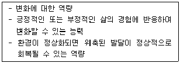
- 성숙(maturation)
- 가소성(plasticity)
- 연속성(continuity)
- 특수화(specification)
- 최적화(optimization)
(정답률: 75%)
16. 발달에 관한 설명으로 옳지 않은 것은?
- 다양한 맥락의 영향을 받지만 발달의 결과는 동일하다.
- 발달은 양적 변화와 질적 변화를 포함한다.
- 기능과 구조가 쇠퇴하는 부정적 변화도 포함된다.
- 신체적, 도덕적, 사회적 발달은 독립적이기보다는 통합적이고 총체적이다.
- 수정에서 죽음에 이르기까지 개인의 체계적인 연속성과 변화를 말한다.
(정답률: 85%)
17. 공격성에 관한 설명으로 옳지 않은 것은?
- 반응적 공격성은 타인의 행동을 적대적으로 해석하고 그것에 대한 보복으로 활용되는 공격성을 의미한다.
- 관계적 공격성은 남아에 비해 여아에게 많이 나타난다.
- 부모의 비일관적 훈육과 애정철회는 자녀의 공격성 발달에 영향을 미친다.
- 관계적 공격성은 사회적 배척을 통하여 또래관계에 손상을 가하는 행동을 의미한다.
- 적대적 공격성은 개인적 목표를 획득하거나 힘을 과시하기 위한 전략으로 활용되는 공격성을 의미한다.
(정답률: 72%)
18. 아동기와 청소년기 학교 부적응에 관한 설명으로 옳은 것을 모두 고른 것은?
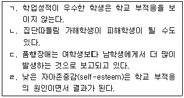
- ㄱ, ㄴ
- ㄴ, ㄷ
- ㄷ, ㄹ
- ㄱ, ㄴ, ㄷ
- ㄴ, ㄷ, ㄹ
(정답률: 72%)
19. “발달은 연속적인가, 비연속적인가?” 라는 기본 쟁점에 대한 입장을 기준으로 발달이론을 구분할 경우, 비연속적 발달이론에 해당하는 이론은?
- 브론펜브레너(U. Bronfenbrenner)의 생태체계이론
- 피아제(J. Piaget)의 인지발달이론
- 스키너(B. F. Skinner)의 행동주의이론
- 반두라(A. Bandura)의 사회학습이론
- 다지(K. Dodge)의 사회정보처리이론
(정답률: 59%)
20. 아동기와 청소년기의 또래관계에 관한 설명으로 옳지 않은 것은?
- 자신의 가치관과 또래집단의 기대 간 불일치가 크면 긴장과 갈등이 초래된다.
- 또래집단은 사회적 비교를 통해 자신을 평가할 수 있는 기준을 제공한다.
- 또래관계에서 발생하는 갈등의 극복 양상은 우정을 지속하는 데 중요한 영향을 미친다.
- 인기있는 아동은 많은 또래들이 좋아하지만, 또래집단 내에서 높은 지위를 유지하는 것은 아니다.
- 또래압력은 긍정적인 방향으로 작용할 수 있다.
(정답률: 63%)
21. 가드너(H. Gardner)의 다중지능 이론에 관한 설명으로 옳지 않은 것은?
- 지능을 하나의 일반 지능으로 기술하는 것을 비판한다.
- 타인의 기분이나 동기를 읽어내는 대인관계 지능이 포함되어 있다.
- 석학증후군(savant syndrome)은 지능이 독립되어 있다는 증거가 된다.
- 전통적 지능에서 다루지 않았던 맥락, 경험, 정보처리 기술의 세 가지 요인을 강조한다.
- 자연의 패턴을 관찰하고 자연의 체계를 이해할 수 있는 자연주의적 지능이 포함되어 있다.
(정답률: 58%)
22. 에릭슨(E. Erikson)의 심리사회적 발달이론에서 다음의 아동에 해당되는 단계는?
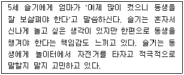
- 주도성 대 죄의식
- 정체감 확립 대 정체감 혼란
- 근면성 대 열등감
- 자율성 대 수치심
- 신뢰 대 불신
(정답률: 69%)
23. 이론가와 발달에 관한 주장이 바르게 연결된 것을 모두 고른 것은?
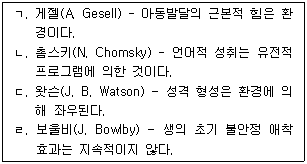
- ㄱ, ㄴ
- ㄱ, ㄹ
- ㄴ, ㄷ
- ㄷ, ㄹ
- ㄴ, ㄷ, ㄹ
(정답률: 63%)
24. 발테스와 발테스(P. Baltes & M. Baltes)의 SOC(Selective Optimization with Compensation) 이론에 관한 설명으로 옳지 않은 것은?
- 전생애적 관점에서 연령에 따른 획득의 최대화와 상실의 최소화를 적응적 발달로 본다.
- 선택, 최적화, 보상을 발달적 조절의 세 가지 중심적 과정으로 제안한다.
- 노화에 따른 내적ㆍ외적 자원의 제약과 상실로 인해 선택과정이 필요한 것으로 본다.
- 노화에 따른 상실을 보상하기 위해서는 타인의 도움이나 부가적 자원의 동원 없이 스스로 대응해야 한다고 제안한다.
- 선택한 목표 달성을 위해 최선의 노력을 다하는 최적화를 중시한다.
(정답률: 64%)
25. 성인기 이후의 인지 발달의 특징에 관한 설명으로 옳지 않은 것은?
- 결정화된 지능은 성인기 동안 감퇴하지 않고 오히려 증가하기도 한다.
- 크레이머(D. Kramer)의 절대주의자 단계는 후형식적 사고 유형에 해당된다.
- 작업기억은 성인 후기가 될수록 급격하게 감퇴한다.
- 후형식적 사고는 성인기 이후에 발달한다.
- 유동성 지능은 대체로 성인 초기 이후 감소한다.
(정답률: 30%)
26. 기질에 관한 설명으로 옳지 않은 것은?
- 발달은 영아의 기질과 부모의 기질 간 상호작용의 산물이다.
- 영아의 기질과 부모의 양육행동이 조화를 이루지 못하면 부모와 영아 모두 갈등을 경험하게 된다.
- 토마스와 체스(S. Thomas & A. Chess)의 연구를 통해 세 가지 기질 유형이 발견되었다.
- 순한 아동은 수면이 규칙적이고 낯선 사람에게도 미소를 잘 짓는다.
- 까다로운 아동은 낯선 상황에서 처음에는 움츠러들지만 곧바로 불안이 없어지고 흥미를 갖는다.
(정답률: 75%)
27. 다음의 사고방식에 해당되는 피아제(J. Piaget)의 인지발달 단계는?
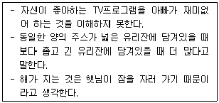
- 감각운동기
- 전조작기
- 구체적 조작기
- 형식적 조작기
- 후형식적 사고기
(정답률: 70%)
28. 비고츠키(L. Vygotsky)의 인지발달이론에 관한 설명으로 옳은 것을 모두 고른 것은?
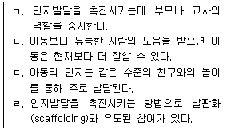
- ㄱ, ㄴ, ㄷ
- ㄱ, ㄴ, ㄹ
- ㄱ, ㄷ, ㄹ
- ㄴ, ㄷ, ㄹ
- ㄱ, ㄴ, ㄷ, ㄹ
(정답률: 71%)
29. 애착에 관한 설명으로 옳지 않은 것은?
- 할로우(H. Harlow)와 동료들은 인공어미 연구를 통해 접촉의 중요성을 발견하였다.
- 영아가 지니고 있는 귀여운 모습은 애착을 이끌어내는 한 요인이 된다.
- 낯선이 불안과 분리불안은 주양육자에 대한 인지적 표상이 형성되었음을 말해준다.
- 양육자와 분리될 때 아동이 보이는 반응은 양육방식의 문화적 차이로 인해 달라질 수 있다.
- 양육방식은 애착형성에 결정적인 영향을 주지만, 아동의 기질은 애착형성에 영향을 주지 않는다.
(정답률: 85%)
30. 프로이트(S. Freud)의 심리성적 발달이론에 관한 설명으로 옳은 것은?
- 성적 에너지가 집중된 신체 부위는 구강, 남근, 항문의 순으로 바뀐다.
- 각 단계에서 심리적 욕구가 상당히 결핍되어도 아동은 다음 단계로 순탄하게 나아간다.
- 항문폭발적 성격은 배변훈련이 원활하게 이루어질 때 형성된다.
- 남아는 자신을 아버지와 동일시함으로써 오이디푸스 콤플렉스를 극복한다.
- 거세불안은 아버지가 아동의 자율성을 침해하고 일상생활에 간섭하기 때문에 발생한다.
(정답률: 75%)
2과목: 집단상담의 기초
31. 감수성 훈련집단에 관한 설명으로 옳지 않은 것은?
- 인간관계 훈련집단으로도 불린다.
- 대부분 구조화 집단의 형태로 진행된다.
- '지금 여기'에서의 정서적 경험에 초점을 맞춘다.
- 집단의 역동과 조직에 대한 이해ㆍ개선을 도모한다.
- 학습방법을 학습하기 위한 실험실과 같은 기능을 한다.
(정답률: 64%)
32. 강박적이고 반복적인 행동들이 더 이상 나타나지 않도록 장기간의 훈습과정을 거치는 것을 특징으로 하는 집단상담의 이론적 접근은?
- 정신분석
- 현실치료
- 인지치료
- 교류분석
- 중다양식치료
(정답률: 53%)
33. 인간중심치료 집단상담자의 역할에 대한 진술로 옳지 않은 것은?
- 집단원들과 심리적 접촉상태를 형성ㆍ유지하기 위해 노력한다.
- 지성적인 면보다는 감성적인 면에 초점을 맞춘다.
- 집단원이 처한 문제보다는 집단원에게 초점을 맞춘다.
- 진지하고 일관성 있는 해석을 통해 집단원의 인격 변화를 꾀한다.
- 문제 해결보다는 촉진적인 분위기 조성에 중점을 둔다.
(정답률: 63%)
34. 다음의 설명에 적합한 집단상담의 이론적 접근은?
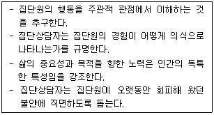
- 현실치료
- 정신분석
- 실존치료
- 분석심리학
- 게슈탈트치료
(정답률: 48%)
35. 개인심리학에 근거한 집단상담에 관한 설명으로 옳은 것을 모두 고른 것은?
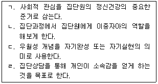
- ㄱ, ㄷ
- ㄴ, ㄹ
- ㄱ, ㄷ, ㄹ
- ㄴ, ㄷ, ㄹ
- ㄱ, ㄴ, ㄷ, ㄹ
(정답률: 55%)
36. 심리극에 관한 설명으로 옳지 않은 것은?
- '지금 여기'에서의 진솔한 참만남을 강조한다.
- 일반적으로 워밍업, 실연, 종결 단계로 진행된다.
- 집단 내의 개인과 개인 혹은 집단과 집단 간의 관계에 초점을 맞춘다.
- 창조성에 대한 인간의 잠재력을 성격의 핵심요인으로 간주한다.
- 언어보다는 행동을 기반으로 한 실연을 통해 문제해결을 꾀한다.
(정답률: 54%)
37. 라자루스(A. Lazarus)의 BASIC-ID 모형의 요소와 그 내용이 옳게 연결된 것을 모두 고른 것은?
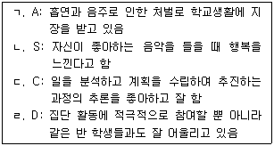
- ㄱ, ㄹ
- ㄴ, ㄷ
- ㄱ, ㄴ, ㄷ
- ㄴ, ㄷ, ㄹ
- ㄱ, ㄴ, ㄷ, ㄹ
(정답률: 34%)
38. 게슈탈트치료에 근거한 집단상담에 관한 설명으로 옳은 것은?
- 과거는 현재와 관련되어 있다는 점에서 중시된다.
- 유기체의 자각 또는 알아차림을 통한 접촉 결여를 주요 문제로 간주한다.
- 집단상담자는 집단원이 언젠가 자신이 죽는다는 것을 스스로 알아차리도록 돕는다.
- 집단원의 전체행동은 행동하기, 생각하기, 느끼기, 생리적 반응으로 구성된다.
- 집단원 자신과의 합일, 동시에 인류와의 합일을 집단상담의 목표로 삼는다.
(정답률: 75%)
39. 교류분석 집단상담자의 역할에 관한 설명으로 옳은 것을 모두 고른 것은?
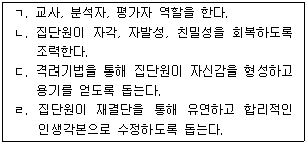
- ㄱ, ㄷ
- ㄴ, ㄹ
- ㄱ, ㄴ, ㄹ
- ㄴ, ㄷ, ㄹ
- ㄱ, ㄴ, ㄷ, ㄹ
(정답률: 32%)
40. 행동치료 집단상담을 다문화상담에 적용할 때의 이점에 해당하지 않는 것은?
- 단기적이며 구조화된다.
- 교육과 예방을 할 수 있다.
- 집단원들에 대한 개인적 평가와 집단과정에서의 행동평가 등을 근거로 집단원 개인별로 접근방향을 맞춘다.
- 집단원들에게 문화적 금지령을 인식할 수 있게 한다.
- 강렬한 감정표현을 중시하지 않으므로, 감정표현 억제를 미덕으로 하는 문화권의 집단원은 감정을 드러내지 않아도 된다.
(정답률: 34%)
41. 집단상담자가 지켜야 할 윤리에 관한 내용으로 옳지 않은 것은?
- 집단원들에게 집단의 성격과 목표, 특성, 과정 등을 분명하게 안내해야 한다.
- 비자발적 집단인 경우, 특정 활동을 거부할 수 있는 권리, 적극적인 집단참여가 집단 밖의 생활에 미칠 수 있는 영향 등에 대해 명확하게 알려 주어야 한다.
- 집단과 관련된 훈련이나 교육, 수퍼비전을 받는 등 집단상담자로서의 최소한의 준비와 자격을 갖춘 후에 진행해야 한다.
- 집단원을 대상으로 실시된 연구의 결과물은 해당 집단원의 요구가 있더라도 제공해서는 안 된다.
- 집단원의 자료를 연구, 교육, 출판의 목적으로 사용할 때 집단원의 신원이 드러나지 않도록 하여야 한다.
(정답률: 74%)
42. 집단상담에 적용되는 규범에 관한 설명으로 옳은 것은?
- 집단의 규칙이므로 변경되어서는 안 된다.
- 집단의 유지, 발전과 관련된 요소로 구성된다.
- 집단원 개개인의 목표 달성에 필수 요소가 된다.
- 집단은 상호작용을 바탕으로 진행하는 것이므로 규범은 명시화하지 않아야 한다.
- 집단원들 스스로 규범을 정하는 것보다 집단상담 초기에 집단상담자가 정하여 제시해야 한다.
(정답률: 67%)
43. 집단 역동에 영향을 주는 요인에 관한 설명으로 옳지 않은 것은?
- 지도성 경쟁: 집단에서 관심을 얻고자 집단원 사이에서 일어나는 현상
- 집단응집력: 집단원들이 집단에 갖는 매력의 정도와 관심도
- 주제의 회피: 집단에서 다루어야 할 주제는 회피하면서 어색하지 않은 주제를 다루는 것
- 하위집단: 집단 내에서 주도권을 잡거나 파벌을 형성하는 무리
- 숨겨진 안건: 집단에서 노출하지는 않고 있지만 집단활동에 영향을 초래할 수 있는 관심거리나 문제
(정답률: 57%)
44. 집단상담 중 피드백 제공 시 고려사항으로 옳은 것을 모두 고른 것은?
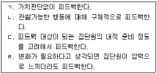
- ㄱ, ㄴ
- ㄴ, ㄹ
- ㄷ, ㄹ
- ㄱ, ㄴ, ㄷ
- ㄱ, ㄴ, ㄷ, ㄹ
(정답률: 74%)
45. 다음 상황에서 집단원들에게 한 집단상담자의 반응에 해당하는 기법은?
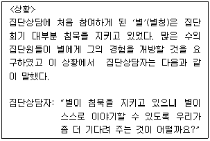
- 반영(reflection)
- 직면(confrontation)
- 해석(interpretation)
- 명료화(clarification)
- 행동제한(cutting-off)
(정답률: 67%)
46. 집단상담을 실시하고자 할 때 고려해야 할 사항으로 옳은 것은?
- 중학생을 대상으로 집단상담을 실시할 때는 구조화 집단상담으로 진행하는 것이 좋다.
- 집단원의 수가 5명 이상이면 협동집단상담자를 두어야 한다.
- 남자 중학생들에게는 강렬한 정서체험이 필요하므로 12시간 이상의 마라톤 집단으로 진행하는 것이 좋다.
- 기능 수준이 낮은 사람을 대상으로 할 경우 쉬운 수준의 활동으로 3시간 연속 진행하는 것이 좋다.
- 자발성 향상을 돕기 위해 개방집단의 형태로 진행하는 것이 좋다.
(정답률: 67%)
47. 집단상담에 관한 설명으로 옳지 않은 것은?
- 집단상담에서 집단의 목표는 집단원 개인의 목표 달성과 동일하다.
- 비교적 정상 범위에 속하는 사람들을 대상으로 한다.
- 집단상담의 성과를 높이기 위하여 목표를 구체적으로 설정한다.
- 집단원에게 집단의 특성과 목적, 내용 등을 명확하게 안내하여야 한다.
- 경제성, 실용성, 다양한 자원의 제공, 문제 예방 등의 강점이 있다.
(정답률: 73%)
48. 집단상담 과정에서 저항으로 해석할 수 있는 행동을 모두 고른 것은?
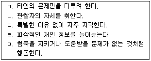
- ㄱ, ㄴ, ㄷ
- ㄴ, ㄷ, ㄹ
- ㄱ, ㄴ, ㄹ, ㅁ
- ㄴ, ㄷ, ㄹ, ㅁ
- ㄱ, ㄴ, ㄷ, ㄹ, ㅁ
(정답률: 70%)
49. 종결회기의 과제로 옳은 것은?
- 미진한 사항을 심층적으로 다루기
- 목표 달성 점검과 학습 내용 개관하기
- 새로운 행동 목표를 정하고 변화 계획세우기
- 변화해야 할 행동에 대해 부정적 피드백하기
- 집단상담에 대한 기대감 말하기
(정답률: 74%)
50. 집단상담자의 자질에 해당하는 것을 모두 고른 것은?
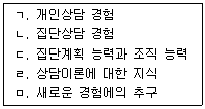
- ㄱ, ㄴ, ㄷ
- ㄷ, ㄹ, ㅁ
- ㄱ, ㄴ, ㄹ, ㅁ
- ㄴ, ㄷ, ㄹ, ㅁ
- ㄱ, ㄴ, ㄷ, ㄹ, ㅁ
(정답률: 71%)
51. 법원의 명령에 의해 집단상담에 참여하게 된 청소년을 위한 개입으로 옳은 것을 모두 고른 것은?
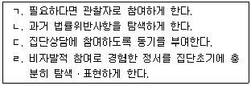
- ㄱ, ㄹ
- ㄴ, ㄷ
- ㄱ, ㄷ, ㄹ
- ㄴ, ㄷ, ㄹ
- ㄱ, ㄴ, ㄷ, ㄹ
(정답률: 45%)
52. 집단상담보다는 개인상담 참여를 권유해야 할 청소년을 모두 고른 것은?
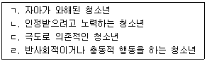
- ㄱ, ㄹ
- ㄴ, ㄷ
- ㄱ, ㄷ, ㄹ
- ㄴ, ㄷ, ㄹ
- ㄱ, ㄴ, ㄷ, ㄹ
(정답률: 66%)
53. 청소년상담사 윤리강령의 내용으로 옳지 않은 것은?
- 청소년 내담자 상담 시 사전에 상담에 대한 동의를 받는다.
- 기록 및 녹음에 관해 내담자의 사전 동의를 구한다.
- 수퍼바이저에게 자문을 받기 위해 내담자의 동의를 구한다.
- 관계법령에서 따로 정한 경우를 제외하고는 내담자의 동의없이 상담의 기록을 제3자나 기관에 공개하지 않는다.
- 퇴직, 이직 등의 이유로 상담을 중단해야 할 경우 기록과 자료를 절차에 따라 상담자가 보관한다.
(정답률: 74%)
54. 집단상담에서 구조화된 활동에 관한 설명으로 옳은 것을 모두 고른 것은?
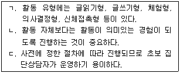
- ㄱ
- ㄷ
- ㄱ, ㄴ
- ㄴ, ㄷ
- ㄱ, ㄴ, ㄷ
(정답률: 72%)
55. 집단상담 개입기술과 그 예로 옳지 않은 것은?
- 연결짓기(linking): “반짝이와 궁금이는 자신들의 생각을 포기하고 다른 사람이 원하는 것을 받아들여야 할 때 자신에게 화를 내는 것으로 보이네요.”
- 보편화하기(universalizing): “감정을 표현하는데 어려움을 느껴본 사람 있어요?”
- 격려하기(encouraging): “반짝이가 남학생들과 이야기할 때 잘 할 것으로 믿어요.”
- 정보제공하기(information-giving): “지금 말하는 것은 화가 난다는 것을 말하는 거죠?”
- 차단하기(blocking): “어렸을 때의 일이 현재 삶에 영향을 많이 주어서 계속 이야기를 하는군요. 그렇지만 다른 사람들의 이야기도 들어보는 것이 어떨까요?”
(정답률: 57%)
56. 청소년이 개인상담보다 집단상담을 통해 얻을 수 있는 이점이 아닌 것은?
- 청소년기의 개인적 우화(personal fable)가 자연스럽게 해소될 수 있다.
- 개인상담에서 느껴지는 성인 상담자와의 힘의 불균형을 느끼지 않을 수 있다.
- 의존성과 독립성을 연습해 볼 수 있는 기회가 된다.
- 또래 집단원들도 자신과 비슷한 감정이나 경험을 갖고 있다는 사실을 깨달을 수 있다.
- 또래 집단원들과의 연대감을 통해 자아를 강화시킨다.
(정답률: 55%)
57. 협동집단상담자들이 집단상담을 운영할 때의 장점으로 옳지 않은 것은?
- 집단원의 상호작용을 관찰할 수 있는 범위가 넓어진다.
- 서로 다른 접근과 전략을 통해 집단원으로 하여금 자신에게 맞는 접근을 선택할 수 있는 기회를 제공한다.
- 집단원의 전이 반응을 촉진시킬 수 있다.
- 한 집단상담자가 부득이하게 불참할 경우 다른 집단상담자가 집단을 진행할 수 있다.
- 집단상담자가 신체적, 정서적으로 소진되는 가능성을 줄일 수 있다.
(정답률: 80%)
58. 집단상담자의 자기노출에 관한 설명으로 옳은 것은?
- 집단원과 대화하는 동안 집단상담자가 자신에 대한 감정이나 집단원에 대한 감정을 진솔하게 말해주는 것이다.
- 현재 집단원이 경험하고 있는 것과 관련하여 자신이 알고 있는 정보를 알려주는 것이다.
- 집단상담자의 부정적인 정서는 표현하지 않아야 한다.
- 집단상담자에 대한 존경심이 생겨 오히려 집단원의 개방을 어렵게 한다.
- 집단원이 생각하고 느끼는 수준보다 높게 표현하는 것이 효과적이다.
(정답률: 63%)
59. 얄롬(I. Yalom)이 제안한 집단상담의 치료적 요인에 해당하는 것은?
- 과업촉진
- 직면
- 집단응집력
- 동일시
- 자기개방
(정답률: 60%)
60. 대화를 독점하는 집단원을 다루는 집단상담자의 반응으로 옳은 것은?
- 문제행동의 특성을 표현하는 용어로 진단한다.
- 다른 집단원들이 불안해 할 수 있으므로 그냥 넘어간다.
- 다른 집단원들의 부정적인 피드백을 유도한다.
- 집단원이 대화를 독점하기 전에 가졌던 자신의 생각과 느낌을 탐색하게 한다.
- 다른 집단원들이 관심을 가질 때까지 기다려 준다.
(정답률: 81%)
3과목: 심리측정 및 평가
61. 검사의 문항 간 정답과 오답의 일관성을 종합적으로 추정한 상관계수로 나타내는 신뢰도 유형은?
- 문항내적 합치도
- 동형검사 신뢰도
- 반분 신뢰도
- 검사-재검사 신뢰도
- 채점자 신뢰도
(정답률: 57%)
62. 성격검사 중 객관적 검사들을 모두 고른 것은?
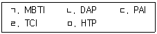
- ㄱ, ㄴ, ㄹ
- ㄱ, ㄷ, ㄹ
- ㄴ, ㄷ, ㄹ
- ㄴ, ㄹ, ㅁ
- ㄷ, ㄹ, ㅁ
(정답률: 69%)
63. 문항난이도에 관한 설명으로 옳지 않은 것은?
- 수검자의 능력수준에 따라 문항의 정답을 맞힐 확률을 나타낸다.
- 고전검사이론에서 지수의 범위는 0.0에서 1.0이다.
- 성취검사나 적성검사에 주로 사용된다.
- 문항난이도를 측정하는 이유는 적절한 난이도 수준의 문항을 선택하기 위해서이다.
- 수검자의 문항에 대한 본래 지식과 추측에 의해 영향을 받는다.
(정답률: 30%)
64. 심리검사 제작과정을 순서대로 올바르게 나열한 것은?
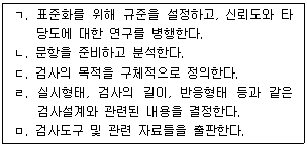
- ㄴ → ㄷ → ㄹ → ㄱ → ㅁ
- ㄷ → ㄹ → ㄱ → ㄴ → ㅁ
- ㄷ → ㄹ → ㄴ → ㄱ → ㅁ
- ㄹ → ㄷ → ㄴ → ㄱ → ㅁ
- ㄹ → ㄷ → ㄱ → ㄴ → ㅁ
(정답률: 63%)
65. 정규분포에 관한 설명으로 옳은 것은?
- 수검자 수가 적을수록 정규분포에 가까워진다.
- 심리검사 결과가 정규분포를 이룬다면, 평균으로부터 2표준편차 이내에 전체 사례의 68.26%가 포함된다.
- 측정 특성이 동질적일수록 정규분포에 가까워진다.
- 한 점수를 다른 유형의 점수로 전환할 때 정규분포의 속성들을 활용할 수 있다.
- 정규분포에서 최빈치는 평균과 일치하지 않는다.
(정답률: 48%)
66. 신뢰도에 관한 설명으로 옳지 않은 것은?
- 신뢰도는 검사점수의 안정성 정도를 나타낸다.
- 신뢰도에서 측정의 표준오차는 검사점수에 어느 정도의 오차가 있는가를 알려준다.
- 전체검사의 신뢰도는 하위검사의 신뢰도와 동일하다.
- 진변량과 오차변량들 간의 관계에서 신뢰도를 추정할 수 있다.
- 다양한 신뢰도 추정방법에 따른 측정오차의 종류는 서로 다르다.
(정답률: 67%)
67. 비율척도에 해당하는 것은?
- 출생지
- 섭씨 온도계
- 운동선수의 등번호
- 장기자랑의 순위
- 몸무게
(정답률: 66%)
68. 심리평가의 구성요소에 포함되지 않는 것은?
- 면담
- 심리검사
- 행동관찰
- 의학적 평가
- 정신병리에 대한 전문지식
(정답률: 69%)
69. 백분위에 관한 설명으로 옳은 것을 모두 고른 것은?
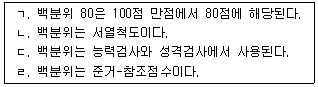
- ㄱ, ㄴ
- ㄱ, ㄹ
- ㄴ, ㄷ
- ㄴ, ㄹ
- ㄷ, ㄹ
(정답률: 50%)
70. 백분위점수, 표준점수, 편차IQ가 속하는 규준의 종류는?
- 발달규준
- 집단내규준
- 전국규준
- 하위집단규준
- 특수규준
(정답률: 61%)
71. 주제통각검사에 관한 설명으로 옳지 않은 것은?
- 그림 자극을 제시하여 이야기를 구성해보도록 한다.
- 카드는 총 31장으로 흑백과 칼라 카드로 구성되어 있다.
- 성인용(TAT)과 아동용(CAT)이 있다.
- 지각-이해-추측-상상의 과정을 통해 대상에 반응하게 된다.
- 반응은 환경 압력과 욕구 간의 갈등에 의해서 나타난다.
(정답률: 54%)
72. 검사자가 지켜야 할 윤리적 의무로 옳지 않은 것은?
- 검사규준 및 검사도구와 관련된 최근 동향과 연구방향을 민감하게 파악해야 한다.
- 심리검사 결과 해석 시 수검자의 연령과 교육수준에 맞게 설명해야 한다.
- 심리검사 결과가 수검자의 삶에 영향을 줄 수 있음을 인식해야 한다.
- 컴퓨터로 실시하는 심리검사는 특정한 교육과 자격이 없어도 된다.
- 검사의 필요성과 검사 유형 및 용도를 설명해야 한다.
(정답률: 72%)
73. 정신상태평가(mental status examination)의 주요 항목에 해당되지 않는 것은?
- 수검자의 지남력(orientation)
- 수검자의 외모와 행동
- 수검자의 기분
- 수검자의 환각 유무
- 수검자의 취미
(정답률: 60%)
74. 지능을 맥락적 지능이론, 경험적 지능이론, 성분적 지능이론으로 구성된 것으로 가정한 지능모형은?
- 젠센(A. Jensen)의 2수준 지능이론
- 케텔-혼(Cattell and Horn)의 유동성-결정성 지능모형
- 버논-버트(Vernon and Burt)의 위계적 모형
- 스턴버그(R. Sternberg)의 삼원지능모형
- 써스톤(L. Thurstone)의 기본정신능력 모형
(정답률: 63%)
75. 심리검사 선정 시 고려해야 할 사항으로 옳지 않은 것은?
- 검사 제작 연도
- 검사자의 선호도
- 검사의 타당도
- 검사 실시의 실용성
- 수검자의 학력
(정답률: 58%)
76. 지능검사에 관한 설명으로 옳지 않은 것은?
- 비네(A. Binet)가 제작한 지능검사의 목적은 아동의 학습 능력을 감별하기 위해서였다.
- 스피어만(C. Spearman)은 지능을 일반요인 g(general factor)와 특수요인 s(special factor)로 구분하였다.
- 써스톤(L. Thurstone)은 요인분석을 통해서 지능을 8개의 요인으로 구분하였다.
- 가드너(H. Gardner)는 지능요인에 운동능력(신체-운동지능), 음악적인 재능 등을 포함시켰다.
- 길포드(J. Guilford)는 써스톤(L. Thurstone)의 지능요인들을 확장시켜 지능구조모형 SOI (Structure-of-Intellect Model)를 만들었다.
(정답률: 63%)
77. 웩슬러(Wechsler) 지능검사의 해석지침으로 옳은 것은?
- 지능검사를 통해 사고로 인한 뇌손상과 인지능력 손상정도를 평가하여 해석할 수 있다.
- 언어성 검사와 동작성 검사는 평가하는 영역이 다르므로 점수 간 비교를 하지 말아야 한다.
- 언어성 지능이 동작성 지능보다 높은 경우, 낯선 상황에 대한 순발력이나 대응력이 높은 편이다.
- 소검사 간에 2점 이상의 차이가 났을 때, 통계적으로 유의한 것으로 본다.
- 지능검사는 투사적 검사이기 때문에 해석 시 수검자의 과거 성장배경을 살펴봐야 한다.
(정답률: 55%)
78. 웩슬러(Wechsler) 지능검사에 관한 설명으로 옳지 않은 것은?
- 아동용 지능검사(K-WISC-IV)의 평균은 100이고, 표준편차는 15이다.
- 아동용 지능검사(K-WISC-IV)의 실시 연령은 6세에서 16세 11개월이다.
- 성인용 지능검사(K-WAIS-IV)의 실시 연령은 16세에서 76세 11개월이다.
- 소검사 간 점수들의 분산을 통해 각 소검사가 표상하는 인지적 특성을 추론할 수 있다.
- 지능의 분포에서 평균 상(High Average)에 속하는 지능지수(IQ)는 110에서 119이다.
(정답률: 56%)
79. 심리검사의 시행과 관련된 설명으로 옳은 것은?
- 검사 시행 중 비정상적인 행동이 발생할 경우 그 내용을 기록한다.
- 어린 아동이나 장애인의 경우에도 효율성의 측면에서 집단검사를 실시한다.
- 투사적 검사는 집단검사로 실시하는 것이 효과적이다.
- 객관적 검사시행을 위해 라포형성은 배제한다.
- 어린 아동은 결과의 객관성을 확보하기 위해 한 번에 검사를 완성해야 한다.
(정답률: 64%)
80. 아동용 웩슬러 지능검사(K-WISC-IV) 실시에 관한 설명으로 옳은 것은?
- 검사 시간 전에 도구들을 손에 쉽게 닿게 배치하여, 아동의 눈에 띄도록 한다.
- 오답을 한 경우 정답을 알려주고, 다음 문항을 실시한다.
- 심리검사 기록용지를 아동이 볼 수 있도록 한다.
- 검사문항이나 실시 지시문을 변경하지 않아야 한다.
- 정답을 말할 때까지 추가적인 질문을 한다.
(정답률: 60%)
81. 진로검사에 관한 설명으로 옳지 않은 것은?
- 홀랜드의 진로탐색검사는 RIASEC이라는 육각형 모형을 통해 진로결정을 위한 효과적인 정보를 제공한다.
- 스트롱의 진로탐색검사 중 진로성숙도 척도는 진로정체감, 가족일치도, 진로준비도, 진로합리성, 정보습득률을 측정한다.
- 스트롱의 직업흥미검사는 개인의 흥미 영역을 세분화하여 진로탐색, 진로계획, 경력개발에 사용할 수 있다.
- 직업흥미검사는 어떤 특정한 직업에 종사하는 사람들의 흥미패턴과 유사성을 측정한다.
- 직업흥미검사는 수검자가 세부적인 전공을 선택하거나 직업능력을 측정하는데 효과적이다.
(정답률: 46%)
82. MMPI에서 MMPI-2로 개정된 부분에 관한 설명으로 옳지 않은 것은?
- 원판에서는 특정지역의 집단으로 규준이 제작되어, 여러 지역의 표본을 추가하여 규준의 대표성을 확보하였다.
- 시대에 뒤떨어지는 단어나 표현은 현대적인 표현으로 수정하였다.
- 원판에서는 예비문항의 부족으로 성격특성을 충분히 반영하지 못하여 내용차원을 확충하였다.
- 원판에서는 성인용과 아동용으로 구분되어 있었으나 성인용과 청소년용으로 개정되었다.
- 수검태도 평가의 중요성이 인식되어 몇 가지 타당도 척도가 추가되었다.
(정답률: 71%)
83. 성격검사에 관한 설명으로 옳은 것은?
- 채점과정과 표준화 유무에 따라 개방형 검사와 폐쇄형 검사로 나뉜다.
- 임상자료를 바탕으로 성격검사를 개발하는 경험적 접근법은 준거집단 방법이다.
- 개인의 공통적인 요인을 추출하는 요인분석법은 이론적인 접근 방법이다.
- 성격검사는 개인의 성취, 흥미, 성격의 구조 등을 측정한다.
- 검사자가 검사의 제작과정, 해석, 활용방법을 아는 것은 필요하지 않다.
(정답률: 19%)
84. SCT검사에 관한 설명으로 옳은 것은?
- 개인의 지능 구조에 대한 추론을 할 수 있다.
- 미완성문장은 직접적인 질문에 비해 수검자가 방어적인 태도를 취하도록 한다.
- 가족, 직업, 대인관계, 자기개념 4가지 영역을 측정한다.
- 표준적인 실시방법은 검사자가 읽어주고 수검자가 반응을 쓰도록 하는 것이다.
- 단어연상 검사로부터 발전된 투사적 검사이다.
(정답률: 61%)
85. MMPI-A를 해석할 때 검토해야 할 질문으로 옳지 않은 것은?
- 수검자의 반응 태도는 어떠한가?
- 수검자의 쓰기 능력은 어떠한가?
- 수검자의 강점은 어떠한가?
- 수검자의 대인관계는 어떠한가?
- 수검자의 학교생활은 어떠한가?
(정답률: 55%)
86. 로르샤하 검사의 채점에서 결정인에 해당되지 않는 것은?
- 형태
- 운동
- 반응영역
- 형태차원
- 유채색
(정답률: 43%)
87. MMPI-2와 비교하여 MMPI-A에만 있는 내용척도는?
- 기태적 정신상태 척도
- 냉소적 태도 척도
- 품행문제 척도
- 낮은 자존감 척도
- 반사회적 특성 척도
(정답률: 68%)
88. 심리검사의 준거타당도에 관한 설명으로 옳은 것을 모두 고른 것은?
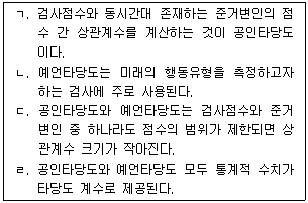
- ㄱ, ㄴ
- ㄱ, ㄷ
- ㄱ, ㄷ, ㄹ
- ㄴ, ㄷ, ㄹ
- ㄱ, ㄴ, ㄷ, ㄹ
(정답률: 53%)
89. MBTI의 ST유형에 관한 설명으로 옳은 것은?
- 장기적인 계획을 선호하고, 분명하지 않은 상황에 개방적이다.
- 사회적인 면과 대인관계에 대해서 잘 알고 있다.
- 어려운 과제를 수행하는 데 있어 인내할 줄 알고 지구력이 있다.
- 능률적이고 실질적이며 신뢰로운 특성을 보인다.
- 과정지향적인 작업환경에서 일할 때 사기가 증진된다.
(정답률: 64%)
90. 다특성-다방법 행렬(multitrait-multimethod matrix)에 따른 실험설계를 통해 확인하는 타당도는?
- 예언타당도
- 수렴변별타당도
- 준거타당도
- 내용타당도
- 안면타당도
(정답률: 60%)
4과목: 상담이론
91. 꿈에 관한 게슈탈트 상담의 설명으로 옳지 않은 것은?
- 꿈에 실존적 의미가 있다고 본다.
- 꿈에 고정된 의미가 있다고 본다.
- 꿈을 통해 미해결과제가 드러난다.
- 꿈을 통해 내면의 통합을 이룰 수 있다.
- 성격의 일부가 현실에 투사된 것으로 본다.
(정답률: 44%)
92. 상담 과정(초기-중기-종결)에 관한 설명으로 옳은 것을 모두 고른 것은?
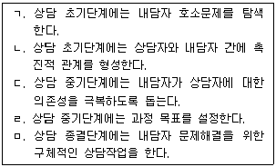
- ㄱ, ㄴ
- ㄱ, ㄴ, ㄹ
- ㄱ, ㄷ, ㄹ
- ㄱ, ㄹ, ㅁ
- ㄴ, ㄹ, ㅁ
(정답률: 34%)
93. 다음 사례에서 혜민이가 보이는 인지오류는?
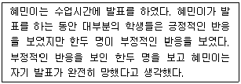
- 마음읽기
- 선택적 추상화
- 흑백논리
- 의미 확대
- 파국화
(정답률: 62%)
94. 행동주의 원리 가운데 프리맥(Premack)원리에 적용된 것은?
- 강화의 원리
- 소거의 원리
- 변별의 원리
- 일반화의 원리
- 연합의 원리
(정답률: 63%)
95. 상담자-내담자 관계에 관한 설명으로 옳은 것을 모두 고른 것은?
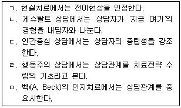
- ㄱ, ㄴ, ㄹ
- ㄱ, ㄷ, ㄹ
- ㄴ, ㄷ, ㅁ
- ㄴ, ㄹ, ㅁ
- ㄷ, ㄹ, ㅁ
(정답률: 39%)
96. 게슈탈트 상담의 주요 개념이 아닌 것은?
- 미해결과제
- 전행동
- 알아차림
- 접촉
- 전경과 배경
(정답률: 71%)
97. 상담자 윤리에 관한 설명으로 옳지 않은 것은?
- 청소년상담사 자격증을 취득했더라도 상담자는 상담역량을 향상시키기 위해 상담관련 교육에 참여한다.
- 상담자는 자신이 상담한 사례를 공개 사례 발표할 경우 내담자의 동의를 얻어야 한다.
- 상담과정에서 내담자가 타인을 살해할 의도를 명백하게 밝혔더라도 내담자 보호를 위해 비밀을 유지한다.
- 상담자는 성별, 인종, 장애 등을 이유로 내담자를 차별해서는 안 된다.
- 상담자는 자신이 가지고 있는 상담역량 이상으로 상담을 할 수 있다고 주장하거나 광고해서는 안 된다.
(정답률: 73%)
98. 다음 제시된 상담자 반응 중 바람직하지 못한 것은?
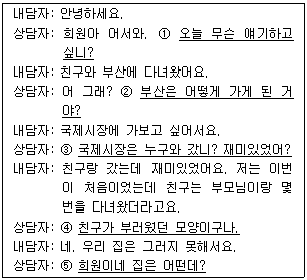
- ①
- ②
- ③
- ④
- ⑤
(정답률: 63%)
99. 교류분석의 상담단계를 순서대로 올바르게 나열한 것은?
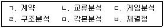
- ㄱ → ㄹ → ㄴ → ㄷ → ㅁ → ㅂ
- ㄱ → ㄹ → ㄴ → ㅁ → ㄷ → ㅂ
- ㄱ → ㄹ → ㄷ → ㄴ → ㅁ → ㅂ
- ㄱ → ㄹ → ㄷ → ㅁ → ㄴ → ㅂ
- ㄱ → ㄹ → ㅁ → ㄴ → ㄷ → ㅂ
(정답률: 41%)
100. 상담이 진행되는 동안 성격이 변화되는 단계를 설명한 게슈탈트 상담의 다섯 층에 관한 설명으로 옳지 않은 것은?
- 피상층: 서로 피상적이고 형식적으로 교류하는 단계
- 공포층: 환경에 적응하기 위해 자신의 욕구를 억압하고 주위의 기대에 맞추어 행동하는 단계
- 난국층: 지금까지 해 왔던 연기를 그만두고 자립을 시도하지만 아직은 힘이 약해서 실존적 딜레마에 빠져 꼼짝하지 못하는 단계
- 내파층: 자신의 문제에 대한 통찰을 얻고 증상의 의미 등이 명료화되는 단계
- 폭발층: 환경과 접촉하여 게슈탈트를 형성하고 이를 해소하는 단계
(정답률: 60%)
101. 실존적 심리치료에 관한 설명으로 옳지 않은 것은?
- 의미 추구를 인간의 기본 동기로 본다.
- 인간은 유한성을 의식하는 존재라고 본다.
- 실존적 불안은 인간이 피할 수 없는 것이라고 본다.
- 인간은 독자적 존재이므로 관계를 맺는 것이 근본적으로 불가능하다고 본다.
- 무의미감은 전통가치의 영향력이 약화된 현대사회에서 더 문제가 된다고 본다.
(정답률: 63%)
102. 상담 중 내담자의 침묵에 관한 상담자 대응으로 옳은 것을 모두 고른 것은?
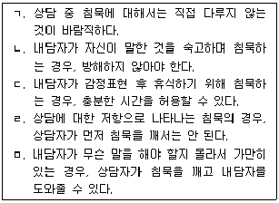
- ㄴ, ㄷ
- ㄱ, ㄹ, ㅁ
- ㄴ, ㄷ, ㄹ
- ㄴ, ㄷ, ㅁ
- ㄴ, ㄷ, ㄹ, ㅁ
(정답률: 64%)
103. 여성주의 상담의 목표로 옳지 않은 것은?
- 역량강화: 능동적으로 선택할 수 있는 행동범위를 넓히도록 돕기
- 성역할 획득: 사회적으로 바람직한 성역할을 획득하도록 돕기
- 다양성 수용: 남녀를 이분법적으로 구분하는 데서 벗어나 다양성을 인정하고 수용하도록 돕기
- 사회변화 실현: 사회적 불평등 개선을 위한 실천적 행동을 하도록 돕기
- 심리적 문제 재정의: 문제를 사회ㆍ정치적 차원에서 재구성해서 이해하도록 돕기
(정답률: 53%)
104. 상담의 기능으로 옳지 않은 것은?
- 심리적 고통 해소
- 대인관계 욕구 충족
- 삶의 문제 해결
- 정신병리 발생 예방
- 자기 성장 촉진
(정답률: 50%)
1⑤. 합리정서행동치료에서 주목하는 비합리적 신념의 예가 아닌 것은?
- 현재의 나는 과거 행동으로 결정된 것이어서 변화시킬 수 없다.
- 내가 바라는 것을 이루지 못하면 절대 행복할 수 없다.
- 나쁜 사람들한테는 합당한 처벌이 있어야만 한다.
- 나를 아는 사람들에게 항상 사랑받아야 한다.
- 내가 바라는 것을 이루기 위해서는 노력해야 한다.
(정답률: 65%)
106. 절충적 상담에 관한 설명으로 옳지 않은 것은?
- 두 가지 이상의 상담이론과 기법을 사용하는 접근법이다.
- 내담자의 발달수준에 따라 다양한 상담이론을 활용하는 데 유리하다.
- 이론적 근거 없이 여러 상담이론의 기법을 단순히 조합하는 것으로는 절충적 상담의 장점을 발휘할 수 없다.
- 상담성과를 높이기 위해 특정 상담이론의 기법을 수정하기도 한다.
- 특정 상담이론에 숙달된 전문가 집단에서는 절충적 접근을 취하지 않는다.
(정답률: 67%)
107. 합리정서행동치료에 관한 설명으로 옳은 것은?
- 정서적 문제를 일으키는 비합리적 행동의 수정을 목표로 한다.
- 신념의 합리성 기준은 사회적 합의 여부이다.
- 치료과정은 ABCDE 모형으로 설명할 수 있다.
- 비합리적 신념의 원인을 탐색하여 제거한다.
- 비합리적 신념의 논박이 핵심이기 때문에 상담관계는 중시하지 않는다.
(정답률: 66%)
108. 정신분석 상담과정에 관한 설명으로 옳지 않은 것은?
- 상담 중 내담자의 말과 행동에 내담자의 신경증적 증상이 표현된다.
- 상담자는 내담자의 언어적 보고와 행동 등에서 내담자 갈등의 원인을 추론한다.
- 내담자는 상담자의 해석을 수용하면서 부정적 감정의 해소를 경험한다.
- 상담자는 내담자가 보이는 상담자에 대한 감정을 주목해서 표면화시킨다.
- 전이현상으로 인해 내담자는 상담자와 신뢰로운 관계를 맺지 못한다.
(정답률: 64%)
109. 다음은 실존적 심리치료의 어떤 기법을 적용한 것인가?
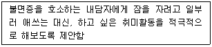
- 부정적 실행기법
- 역설적 의도
- 탈숙고
- 유머 사용
- 변증법적 시도
(정답률: 58%)
110. 접수면접 전 상담자가 검토해야 할 사항이 아닌 것은?
- 상담자 선호 접근법에 따른 상담 계획
- 상담 신청 경위
- 이전 상담 경험과 성과
- 상담에 대한 내담자의 기대
- 상담신청서에 내담자가 작성하지 않고 비워둔 것
(정답률: 59%)
111. 인간중심상담의 기본 개념에 해당하는 것을 모두 고른 것은?
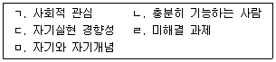
- ㄱ, ㄴ, ㄷ
- ㄱ, ㄴ, ㄹ
- ㄴ, ㄷ, ㄹ
- ㄴ, ㄷ, ㅁ
- ㄷ, ㄹ, ㅁ
(정답률: 53%)
112. 상담의 목표에 관한 내용으로 옳지 않은 것은?
- 구체적인 상담개입과 전략은 목표에 의해 결정된다.
- 뚜렷하고 구체적인 목표는 상담과정에 추진력을 제공한다.
- 최종목표를 달성하기 위하여 하위목표들을 설정할 수 있다.
- 초기에 목표를 설정하면 수정하지 않고 이행해야 한다.
- 내담자와 목표를 협의함으로써 내담자가 상담에 적극적으로 참여하게 된다.
(정답률: 67%)
113. 상담목표 설정이 효과적인지를 검토하는 기준으로 옳은 것을 모두 고른 것은?
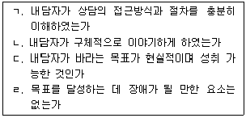
- ㄱ, ㄹ
- ㄱ, ㄴ, ㄷ
- ㄱ, ㄷ, ㄹ
- ㄴ, ㄷ, ㄹ
- ㄱ, ㄴ, ㄷ, ㄹ
(정답률: 72%)
114. 현실치료 기법에 관한 설명으로 옳지 않은 것은?
- 내담자가 현재 잘 기능하지 못하는 부분에 초점을 맞추어 긍정적인 행동을 하도록 격려한다.
- 내담자가 자주 사용하는 언어적 표현을 사용하여 내담자와 소통하는 것이 중요하다.
- 내담자의 말과 행동이 일치하지 않는 것을 인식시켜서 자신의 말과 행동을 책임지게 한다.
- 내담자와 유머를 나누면서 수평적인 관계를 재확인하고 편안한 분위기에서 솔직한 대화를 나눌 수 있다.
- 내담자가 대인관계에 어려움을 겪고 있거나 새로운 행동을 실천하고자 할 때 역할연기를 활용한다.
(정답률: 28%)
115. 개인심리학의 상담과정에 관한 설명으로 옳은 것을 모두 고른 것은?
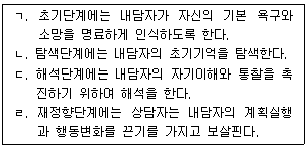
- ㄱ, ㄴ
- ㄴ, ㄷ
- ㄱ, ㄴ, ㄷ
- ㄴ, ㄷ, ㄹ
- ㄱ, ㄴ, ㄷ, ㄹ
(정답률: 5%)
116. 상담기법인 해석을 할 때 고려해야 할 내용으로 옳은 것을 모두 고른 것은?
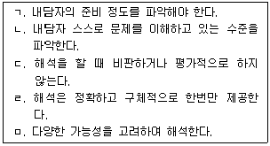
- ㄱ, ㄴ, ㅁ
- ㄱ, ㄷ, ㄹ
- ㄴ, ㄷ, ㅁ
- ㄱ, ㄴ, ㄷ, ㄹ
- ㄱ, ㄴ, ㄷ, ㅁ
(정답률: 61%)
117. 인지치료에 관한 설명으로 옳지 않은 것은?
- 개인의 주관적 경험과 이성적 판단을 중시한다.
- 증상에 대한 객관적 평가를 중시하며 심리검사를 활용한다.
- 개인의 행동이 정서와 사고에 미치는 영향을 밝힌다.
- 자가치료(self-treatment)를 강조한다.
- 상담자와 내담자의 협동적 관계를 강조한다.
(정답률: 17%)
118. 개인심리학의 상담기법에 해당하는 것을 모두 고른 것은?
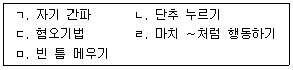
- ㄴ, ㄹ
- ㄱ, ㄴ, ㄹ
- ㄱ, ㄷ, ㅁ
- ㄱ, ㄴ, ㄹ, ㅁ
- ㄴ, ㄷ, ㄹ, ㅁ
(정답률: 11%)
119. 인간중심상담의 상담과정이나 기법에 관한 설명으로 옳지 않은 것은?
- 상담자는 내담자의 감정, 사고, 행동에 대하여 어떠한 평가도 하지 않는다.
- 상담자는 내담자를 대신하여 상담에 관하여 결정하지 않는다.
- 상담자는 내담자가 스스로 자신을 이해하고 수용하도록 분위기를 만든다.
- 상담자는 공감적인 자세를 유지하고 자신의 내면세계를 노출하지 않는다.
- 내담자는 '지금 여기'에서 느끼는 것을 표현하면서 자기의 감정에 솔직해지려는 노력을 하게 된다.
(정답률: 63%)
120. 상담자가 갖추어야 할 전문적 자질에 관한 설명으로 옳지 않은 것은?
- 개인의 성격에 영향을 미치는 사회문화적 요인을 이해한다.
- 청소년수련기관의 활동 등 사회환경에 대한 지식을 습득한다.
- 개인의 발달적 특성을 고려하여 행동을 이해한다.
- 자신이 극복하지 못한 문제를 가진 내담자를 상담함으로써 전문적 역량을 강화한다.
- 전문가의 감독 하에 상담실습을 경험한다.
(정답률: 72%)